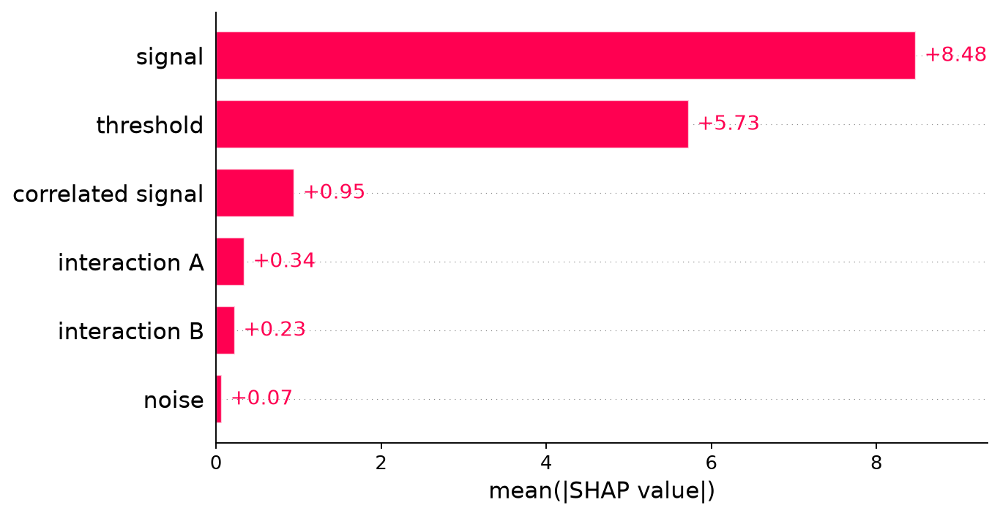

From One Tree to Forests, Boosting, and Interactions
A forest or boosted model combines many tree outputs. Once the output scale and reference rule are fixed, its feature contributions combine in the same way. This follows from the linearity we used to add leaf explanations.
The important order is: define the model output being explained, combine contributions on that scale, and only then interpret the total. A nonlinear output transformation cannot be distributed across individual feature contributions.
Add trees using the model’s actual weights
Suppose a model has the form $F(x)=b+\sum_t a_t f_t(x)$. Here b is a constant starting value, $f_t$ is a tree, and $a_t$ is its weight. If the ensemble group value is the same weighted combination of the tree group values, then:
The constant b belongs entirely in the baseline. Each feature receives the weighted sum of its tree contributions. For an average of T trees, every weight is 1/T. For a boosted sum, the learning rate may be represented by the weights or already absorbed into the stored leaf values. Do not apply it twice.
For path-dependent explanations, each tree retains its own covers, including any sampling weights recorded during fitting. For background replacement, apply the same reference rows to every tree so the sum of tree-level averages equals the average ensemble output.
A two-tree calculation
Use our original tree as the first component: baseline 52, contributions $(24\frac13,3,10\frac23)$, prediction 90. Add a second tree that splits only on B, predicting −4 for B = 0 and 8 for B = 1, with equally weighted branches. Its baseline is 2 and its B contribution for our row is 6.
Now define $F(x)=5+0.1f_1(x)+f_2(x)$. We can account for every part:
| Component | Baseline | A | B | C | Prediction |
|---|---|---|---|---|---|
| 5 + 0.1 × first tree | 10.2 | 2.433333… | 0.3 | 1.066667… | 14 |
| Second tree | 2 | 0 | 6 | 0 | 8 |
| Total | 12.2 | 2.433333… | 6.3 | 1.066667… | 22 |
The feature contributions sum to 9.8, and $12.2+9.8=22$. If instead we averaged the two unscaled trees, the prediction would be $(90+8)/2=49$, the baseline $(52+2)/2=27$, and the feature contributions would also be averaged. The aggregation must match the model we actually use.
Classification: identify what “raw” means
For a regression forest, the raw output is usually the predicted numeric target. For a binary boosted classifier, an additive tree output may be a margin in log-odds units. A sigmoid then converts that total to a probability.
If the margin baseline is −1 and the feature contributions sum to 2, the margin is 1. Applying the sigmoid to the reconstructed total gives approximately 0.731. Applying the sigmoid separately to each contribution does not yield probability contributions.
Also distinguish the sigmoid of an average margin from the average predicted probability: nonlinear transformations generally make them different. A probability explanation needs a group-value calculation on the probability scale, with support for that model and explainer configuration.
“Raw” does not universally mean log-odds. In our scikit-learn random-forest classification example, the trees output class probabilities, and raw SHAP values reconstruct predict_proba. The classifier’s prediction API describes that averaged-probability output. Verify the target directly rather than inferring it from an option name.
Separate pairwise interaction terms
Ordinary SHAP divides all effects among individual features, including effects that depend on combinations. SHAP interaction values organize a further allocation into a symmetric matrix. The diagonal contains main effects; the off-diagonal entries split each pair’s interaction between its two symmetric positions.
For Maya and our four-leaf spending tree, the matrix is:
| Row / column | A | B | C | Row sum |
|---|---|---|---|---|
| A | 24⅔ | −3 | 2⅔ | 24⅓ |
| B | −3 | 6 | 0 | 3 |
| C | 2⅔ | 0 | 8 | 10⅔ |
Each row sums to that feature’s ordinary SHAP value. Every matrix entry together sums to 38, the prediction minus the baseline. The A–B interaction appears twice, as −3 in each position, so its combined off-diagonal contribution is −6. Reading one −3 entry as the entire pair term would miss the symmetry convention.
We can verify the A–B entry without relying on the plot. When C is absent, the joint difference is $v(AB)-v(A)-v(B)+v(\varnothing)=-6$. When C is present, it is $v(ABC)-v(AC)-v(BC)+v(C)=-6$. With three features, the off-diagonal interaction weights these two differences by 1/4 each, giving −3.
The diagonal then ensures the row totals match the ordinary SHAP values. B’s diagonal is 6; adding its A interaction of −3 and C interaction of zero gives B’s value of 3. Interactions describe the fitted model under the chosen game. They do not demonstrate physical or causal interactions.
The runnable verification checks symmetry, row sums, and the full sum against the direct calculations. See the official interaction example for the library convention. Check mode and model support before requesting interactions; the script here uses a path-dependent raw-output explanation.
Summarize a chosen collection of rows
To measure typical contribution size in a collection, take each feature’s absolute SHAP value for every row and average those magnitudes. Taking absolute values first prevents positive and negative contributions from canceling.
If a feature contributes +10 to one row and −10 to another, its mean signed contribution is zero, but its mean absolute contribution is 10. Those statistics answer different questions: net direction versus typical size.


Keep those two populations distinct. Changing the reference rows changes the individual explanations. Changing the explained rows changes which explanations enter the average. A recent-customer ranking can therefore differ from a training-population ranking even with the same model.
The forest in this figure also learns a small contribution from the input named “noise.” That name describes how we generated the data, not a guarantee that the fitted finite-sample model will ignore it. Explanations describe the model we fitted. The next chapter trains that model, checks its prediction error, and verifies its explanations before drawing the figures.